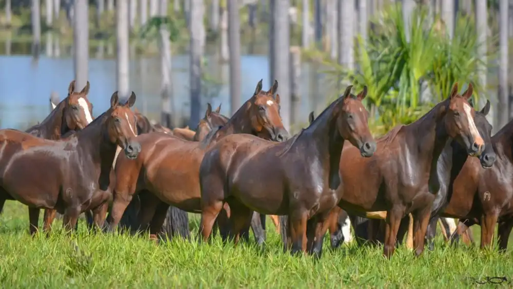
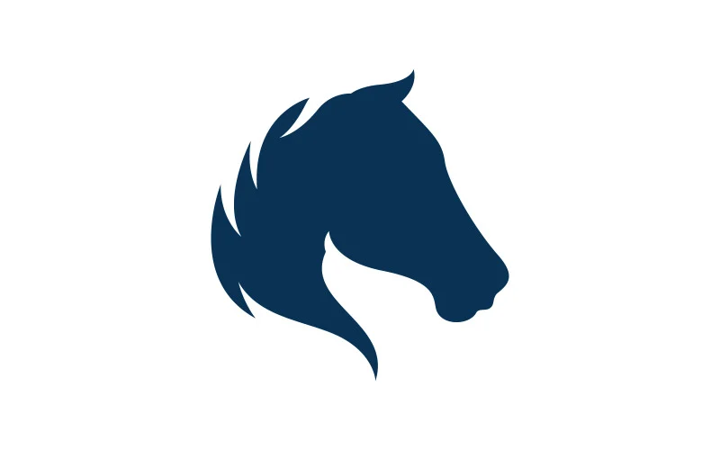

Fazenda de Equinos
Cavalos
remedios
Aberto ⋅ Fecha às 18:00 (41) 98804-0240 www.embryohorse.com.br Serviços: Biotecnología Aplicada a Reprodução Equina,Educação continuada na área de equinos,Reprodução Equina Atende Curitiba e as proximidades Centro de Reprodução Equina EmbryoHorse / VetHorse Academy - R. Padre Francisco Proft, 4000 - Contenda, São José dos Pinhais - PR, 83115-970
Os equinos constituem uma família de mamíferos perissodáctilos. Esta família abarca apenas o género Equus, onde se classificam o cavalo e o burro, além da zebra
 
clínica
Vendas
Exemplos
Indicação de raça
Indicação de instalações e equipamentos
Evolução do rebanho
Planejamento alimentar
Formulação de dietas
Cartilha de manejo
Certificação e regulamentação da produção
Pesquisa mercadológica